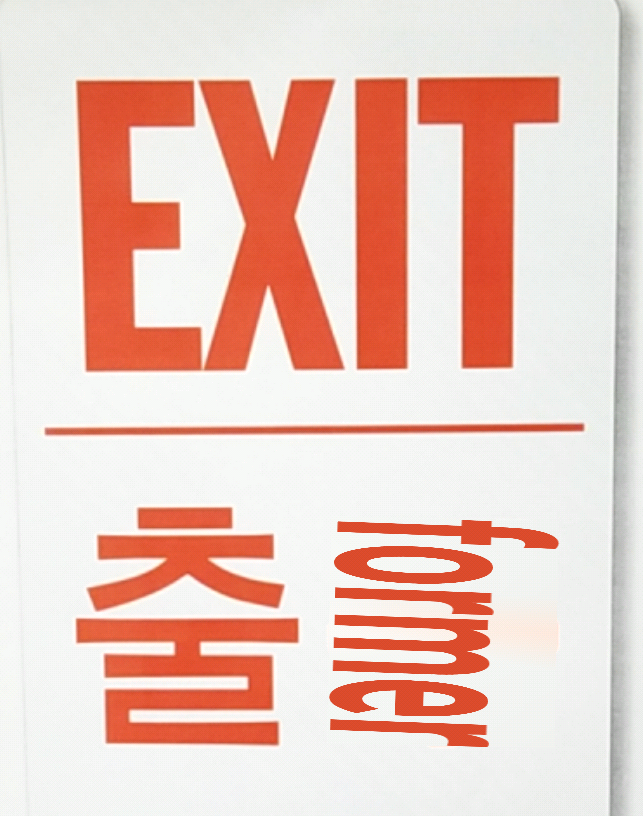
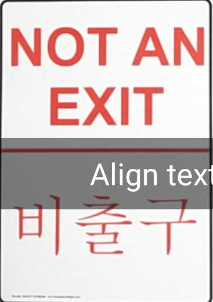
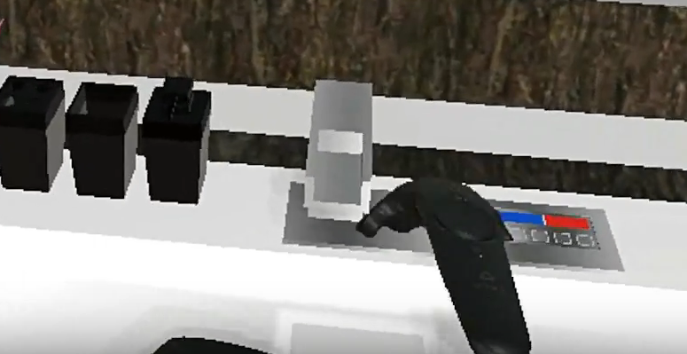
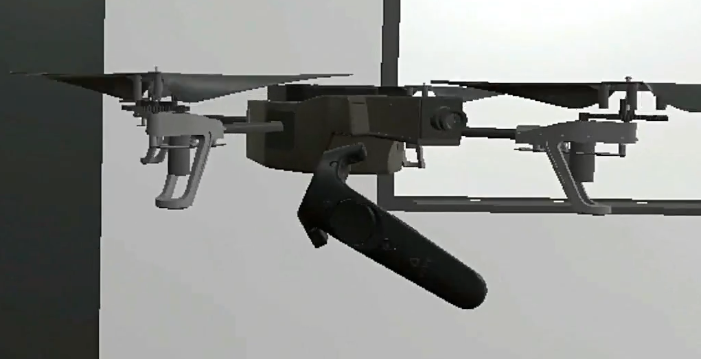
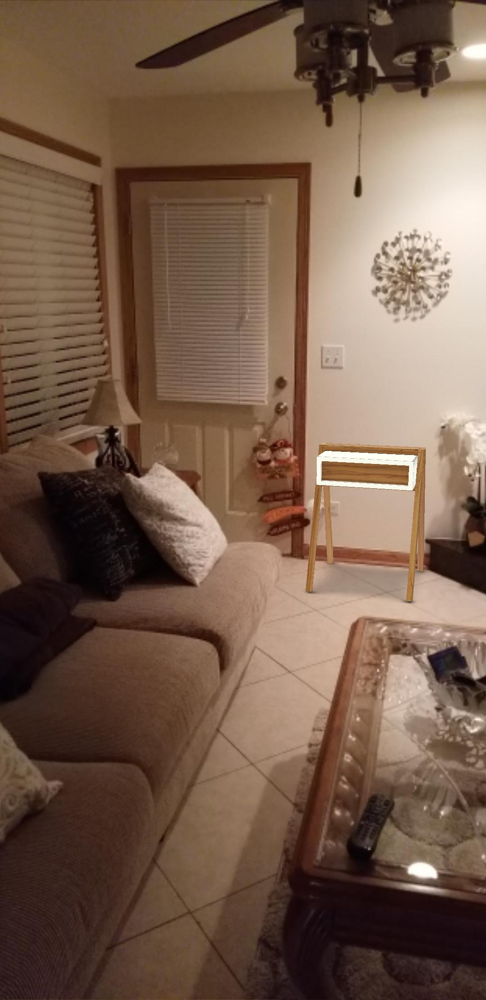
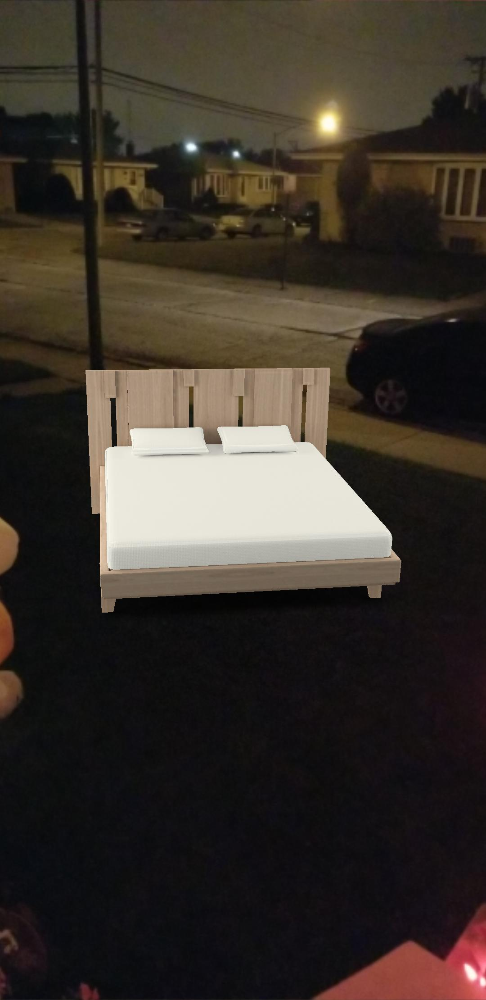
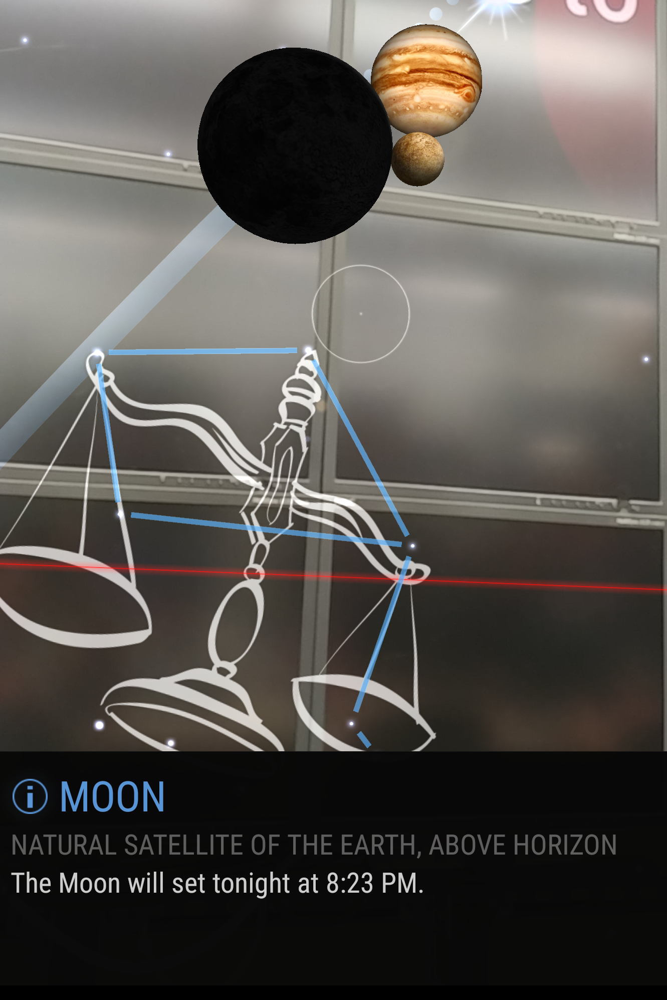
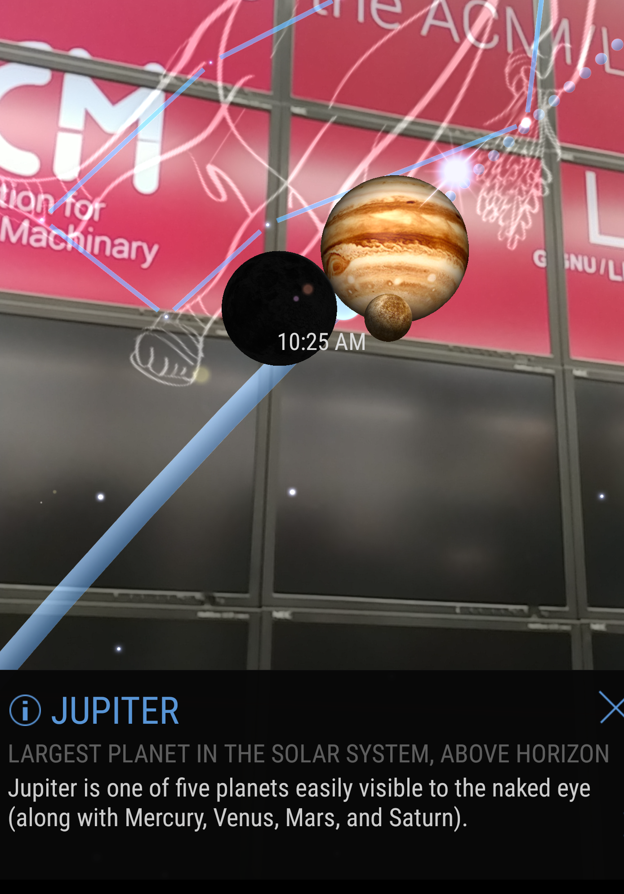

My initial thoughts on the demos was something like, "gee wiz, this class is awesome!" The first thing I went to was the HTC Vive. The Vive is really cool because it tracks all of your movement based on two hands and a headset. And then all the extrapolated data that comes with it: wingspan, height, shoulder distance, and other areas of measurement. It was a fun experience and I understand why people would fall down while trying to navigate through Google Earth. It feels like you are in a different space and that the you have a lot of control of what your seeing through the Vive. There is not that much that is holding you back from flying around the world; it all comes down to imagination and how you use it to navigate through a virtual world.
To Compare the Google Earth VR and the Circus Games VR, they both use the controls in different ways. The Google Earth VR uses the hand controls to navigate around the map, whereas the Circus Games uses it to actually be your hands in virtual space. It is some weird emulation that is being occured to allow someone to think that their physics hands are actually being used in virtual space like that. It kind of gives a sense of a false reality. Some negative to come from that would be that the user would actually choose to stay in virtual space rather than in reality. There are a lot of movies that have the idea of being "plugged in", and I think that that is becoming more and more prominent in the reality that we live in right now with all the new technologies that allow people to feel like that.
But moving from VR, I want to talk about the AR. The HoloLens is really bringing reality in virtual world. The game that we played, some space alien shooter game, was a cool way to integrate the real world with a virtual world. I am not sure why but it felt like it was the norm of how people should live. Having something be augmented over the real world, visually, can become very handy in more than one case. For construction workers to be able to see what they are working with or if they need to take things apart, they can see that in augmented reality before acually doing something. Something like this would be good in the medical field to show a body while in surgery to make better educated decisions on where to have the surgery.
Moving on from AR and VR, I played with the SAGE2 Wall and the Cave 2. Both of them are very unique in their own way and they provide ways of visualizing things that were previously very difficult to view. In the Cave, we were shown a demo about the the inside of the brain with the connections. We were able to move in close and view the different directions of connections that were in the brain. That is very useful in the medical field. They can teach classes in different ways. Before, students would have to imagine what the demos would look like, but being inside of an environment where the users can see, in real time, the brain and see what they are learning. I was also shown that a team from NASA was in the Cave and they were testing out a robot probe that would send signals out and map the bottom of the ocean. That is a very unique thing to be able to visualize in a space that is all around you rather than just in a small rectangle that is infront of your face.
To talk more about the SAGE wall, in a classroom, that is phenominal. It really helps students be able to see what a professor is talking about and be able to see up close what is happening. Having such a big screen to display a lot of information to the students all at once gives a student time to digest the information and be able to know what they are learning at a faster rate. For me personally, if I can see a big set of information and be able to work through it whilst the professor is talking about it, it gives me a chance to test myself as well as learn from the professor if I do not understand. Its different than having to go from one slide to another because I do not see the whole picture. If I can see more of what I am learning at once, then I can understand why I am learning something and how it applies.
All in all, the demos really showed me some cool things about what modern technology can do and what it can improve on. I like the fact that a user can visually be somewhere else while their body is here. Its a unique experience to be able to emulate and visually show. Pros I can see that the Cave2 Or SAGE2 being used in education based situations. Where you have a class and the professor is trying to demo a lot of things, or show a lot of information to students. The cons would be that the students would have a lot of information inf the professor did not manage the space properly. The professor could display the entire day's course work and work through it around the room. The Cave could be used in a similar way to enable students to be able to interact with the information that the professor is giving to their students. Pros of AR and VR is that AR could be used to visualize before doing anything. Being able to see diagnostics information before and whie doing surgery would enable the doctor to do more precise work and be able to adjust his or her surgery to accomodate to the patient. For a car repair shop, be able to display a broken down version of an engine and see the part that is not working properly and repair it properly without wasting extra time. Cons would be a world where everything is virtual. There would be less and less human interaction and more and more virtual interaction. Losing the human sense of life and enabling and more robotic sense of life.
What an interesting comparison: to compare AR in HoloLens vs phone. I think that the idea of the comparison is actually pretty cool. Using AR on the phone to test the Google Translate feature on the phone  proved to not be the best thing. As you can see, it is not perfect. It could be because the Korean translate feature is difficult to work with, but to show another example of Google translate: . As you can see, the Korean translate on Google Translate is not really working. I am not sure why it does not work, but as you can see, the translate is not that fluid, or even working.
Now, I have not tested AR translate within a HoloLens, but I would assume it would work a little bit similar but also completely different. How it would be similar, is that AR in glasses are hard to portray in a neat manner. You would either have to show the translation over the words or next to the words that is being translated. There area that makes me most concerened about having translation in AR is that it would definitely obscure the view of the user as the user would have to read the translations of the words as well as the area around the user.
Some benifits of AR in glasses though, is that it can display translation while some one is speaking. That would be really difficult to do on a phone device because the user would have to look at the phone device while getting the translations of the speaker. It is much easier to do that on a HoloLens because the HoloLens enables the user to get direct translations from the speaker that is infront of the user. I think that that would be a really useful tool for people who are traveling and for those who are on either medical missions or out on the field for combat or something.
Overall, I think that AR in a headset and AR in a phone are different in their own ways. I think that the AR in a headset is good in the fact that it allows for hands-free usage and allows for a more immersive experience. The phone is good if there is something fast that needs to be augmented. The phone can be used for other things but it is limited to what it provides. The AR experience can help in many ways but between the two things that are available currently, the experience is quite limited.
This project was a very well made project. The interactions with the items are very good and it seems as though almost every object that is able to be picked up within the VR. The interaction with some items, like the coffee maker, is well made and it interacts with the remote quite well. There is not really a glich that can happen with the coffee maker, being where you touch it with the remote, but more of a possible interaction with a standard coffee maker. It would be really cool if some physical liquid flowed out of it to show a more realistic version, but that might be too much to do in the amount of knowledge we have right now. I also liked their building of the bathroom. They used the interactions and sounds well. The biggest thing about that was that they knew that their knowledge was limited to being able to interact with objects with wither a grab or a collider and used their knowledge to be able to use colliders to interact with the sink and made it motion sensing . It was unique from other groups because they addressed the problem that they had, with the current limitations of controls, and used it to their advantage.
The ambiance of the room is also very pleasant. The lighting was nice and full and it did not feel as though there was actualy false lighting. The sound that played along with the room was just as much an ambiant room sound rather than something that seemed out of place. The sounds that were activated by triggers were also well placed and seemed as though they belonged to the object. As I was saying before, the interactions were well placed and seemed as though they knew their limitations and they used it well.
Some other VR tools that they used well was that they were able to get teleportation to work with the controls. Many groups were not able to do that and it made watching their presentation very nausiating, especially when the presenter would turn around quickly. The frame rate for this group was a little slow. I think that this group probably did a little bit of optimization either with the objects that they were using or by reducing the size of the current 3D model of the EVL. Their scaling for objects is also much to scale. It is visible that the scaling was made to work with the physical representation of the objects that they have used. The way that they used the drone  and provided different physics for the drone because the blades were on. It's a cool experience to see that people knew how to change physics and play around with different settings of tools provided by Unity.
This project was also well made. There were able to implement many of the same features as Group 3, being controller interaction with colliders, teleportation, good sound effects, good lighting, and good ambient sounds. This group also did a good job on creating physics for a majority of the objcts that were present. They made it so most items that would have physics in the real world, would be portrayed in a similar fashion in the virtual world. I think that this team did a good job on interactions of objects and everything seemed to be of scale to be shown as proper.
I enjoyed that they were able to do basketball and skee ball. It's a good use of physics albeit the skee ball was a little iffy with the colliders. As stated previously, the had a good amount of items with physics on them. Another cool item with physics on them was their file cabinet. They were able to play with each individual drawer and put them back accordingly. They also had some weapons with physics on them, which seemed as though they added a heaver gravity force to it to be realistic in the sense that metal weapons would have a stronger graviational pull to it because of the mass. It would have been really cool if they made it so that things had cloth physics and could be cut up, but based on the time, I'm sure they could have done that if they had more time.
Some other things was the adjustable light that they had added. Providing a different feel for the interaction of the room. It's not really realistic, but it was a nice feature to have regardless. I also liked how there were targeted areas with their own lights and then there was the ambient lighting of the room. There was a lamp that casted proper shadows, obviously using the added Unity tools, but it was nice to see that they had added the proper tools to their objects to be able to do that well. They also have a light on the desk that was a targeted light. it was unique because, again, they have targeted lights that work as expected. They would focus the lights on the direction of actual travel.
Something like the augmented reality experience with this shows that companies are trying to get users to view furnature before someone buys. It's a unique experience that I can try and see what works in a place before I go out and buy it. Seeing from my picture  you can see that this is a perfect example of being able to see the position of a potential small table that I can add to my room. It fits nicely but it is slightly slanted, or it just might be me seeing it at a weird angle like that. But it does fit in very nicely. But yes, from here I can see where I can place a table as such and see what I could do with it. I might use it as a place to hold my keys, or with the season of Holloween, a place to put the candy that I will be giving out during the holiday. At least from this app, I can get an accurate idea of what its for.
But another thing that this app has shown, is that the app can be quite the goofball. As you can see in this here picture , there is something that is quite off of the placement of the bed. Oh wait, its the fact that the app has tracked my 'room' to be the entire outside and that I can place my bed anywhere I want to! Yes, it is a strange thing to see, but that is the power of augmented reality! You can take any space and turn it in to whatever you want! It is a very odd thing to be able to do that, but for an app to track the ground that is outside, it is pretty nice. Everything is tracked pretty well, so it seems realistic in a sense that it is well tracked.
  These are my two pictures from the SkyView app. Based on these shots, the Moon and Jupiter are very close together... except in reality, they are very, very far apart. I think one thing that this app is missing is relative distances between the user, the different locations, etc. As an improvement, that would be one thing to reconsider for making an app like that. Aside from that though, it is a really neat idea to be able to see where the planets around you are. With the question that you proposed, 'What is that?', this app would help point out what is in the sky in that location! Today, according to Facebook, there is a meteor shower called Orionid Meteor Shower. Being able to see that through an app that is connected to a camera that is tracking the meteor shower would also be a really cool. Being able to see a meteor shower from your phone because you can't make it out to go see the meteor shower in person, is a neat feature. Plus, just being able to track the meteor shower from your phone to know when to go out and prepare your cameras and what not, is also a cool idea.
The app also provides a basic understanding of constilations. It shows the basic path of the planets that are circulating around your current location. That is really helpful in trying to understand the galaxy around you. It also is a cool feature to show off when you're hanging out with your friends and want to show something cool about constilations and things around you that are thousands of miles away.